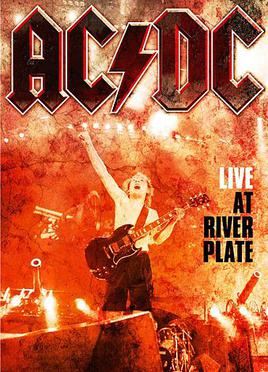
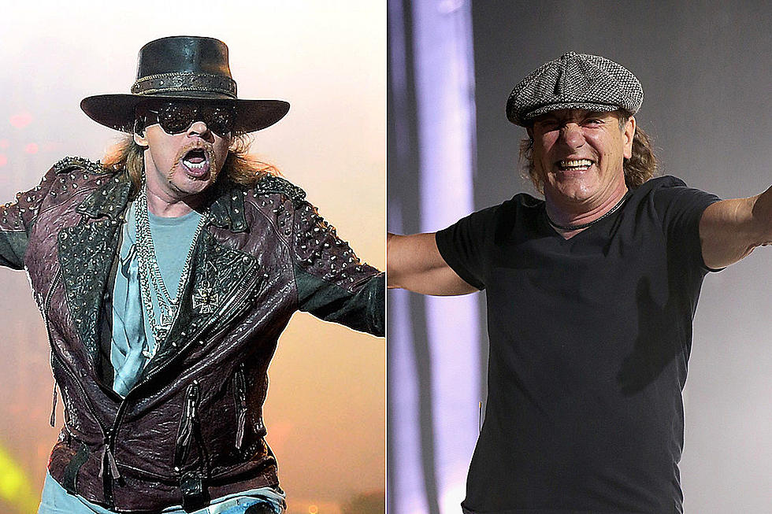

About River Plate concert:

Live at River Plate is a live concert film documenting AC/DC’s Black Ice World Tour.
The DVD includes footage from three concerts performed in December 2009 at the Estadio Antonio Vespucio Liberti in Buenos Aires, Argentina,
which is the home stadium of Argentinian football club River Plate. It was directed by David Mallet, with Rocky Oldham as producer.
The recording of the concerts required the use of 32 HD cameras; a company called Serpent Productions was responsible for filming and then producing the footage of the concerts.
It was also the band’s last live album to feature rhythm guitarist Malcolm Young, before his retirement from touring due to dementia five years later and his death in 2017.

Brian Johnson was force to leave AC/AC:
As mentioned, the AC/DC legend was forced to exit the band's Rock or Bust tour last year due to hearing issues. While many assumed it was due to the punishing volume of AC/DC's live show that brought on the risk of hearing loss, the singer detailed the problems back in 2014 during an interview with Howard Stern.
“I didn’t get [the hearing loss] from music. I got it from sitting in a race car too long without earplugs,” said Johnson. “I heard me eardrum burst, because I forgot to put me plugs in under my helmet. That’s how it happened. Music had nothing to do with it.”
Read More: AC/DC Legend Brian Johnson Rolls Race Car at Silverstone Classic.Axl Rose will replace him.

Brian Johnson has praised Axl Rose for doing a “fantastic job” during his stint with the legendary Australian band.
"He jumped into a tough, tough vocalist gig," Johnson tells Ultimate Classic Rock. “You've got to be on top of your game for that. There's not many resting places.